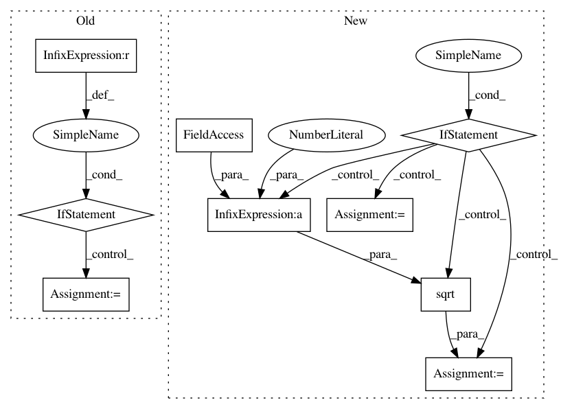

85d02c39457ee57f5545fbea6079c518a5fec3b8,src/skmultiflow/meta/adaptive_random_forest_regressor.py,ARFRegBaseLearner,_normalize_drift_input,#ARFRegBaseLearner#Any#,476
Before Change
drift_input = drift_input[0]
if drift_input < self._min_drift_data:
self._min_drift_data = drift_input
if drift_input > self._max_drift_data:
self._max_drift_data = drift_input
if self._min_drift_data != self._max_drift_data:
return (drift_input - self._min_drift_data) / \
(self._max_drift_data - self._min_drift_data)
else:
After Change
self._k += 1
// Welford"s algorithm update step
if self._k == 1:
self._pM = self._M = drift_input
self._pS = 0
return 0.0
else:
self._M = self._pM + (drift_input - self._pM) / self._k
self._S = self._pS + (drift_input - self._pM) * (drift_input - self._M)
// Save previously calculated values for the next iteration
self._pM = self._M
self._pS = self._S
sd = np.sqrt(self._S / (self._k - 1))
// Apply z-score normalization to drift input
norm_input = (drift_input - self._M) / sd
// Data with zero mean and unit variance -> (empirical rule) 99.73% of the values lie
// between [mean - 3*sd, mean + 3*sd] (in a normal distribution): we assume this range
// for the norm variable.
// Hence, the values are assumed to be between [-3, 3] and we can apply the min-max norm
// to cope with ADWIN"s requeriments
return (norm_input + 3) / 6
def reset(self, instances_seen):
if self._use_background_learner and self.background_learner is not None:
self.estimator = self.background_learner.estimator
self.evaluator = self.background_learner.evaluator
In pattern: SUPERPATTERN
Frequency: 3
Non-data size: 9
Instances
Project Name: scikit-multiflow/scikit-multiflow
Commit Name: 85d02c39457ee57f5545fbea6079c518a5fec3b8
Time: 2020-04-28
Author: saulomastelini@gmail.com
File Name: src/skmultiflow/meta/adaptive_random_forest_regressor.py
Class Name: ARFRegBaseLearner
Method Name: _normalize_drift_input
Project Name: rtavenar/tslearn
Commit Name: 798f945eadec05362ce8687cc83793fc8eab4d73
Time: 2019-08-20
Author: romain.tavenard@univ-rennes2.fr
File Name: tslearn/svm.py
Class Name: TimeSeriesSVR
Method Name: fit
Project Name: rtavenar/tslearn
Commit Name: 798f945eadec05362ce8687cc83793fc8eab4d73
Time: 2019-08-20
Author: romain.tavenard@univ-rennes2.fr
File Name: tslearn/svm.py
Class Name: TimeSeriesSVC
Method Name: fit